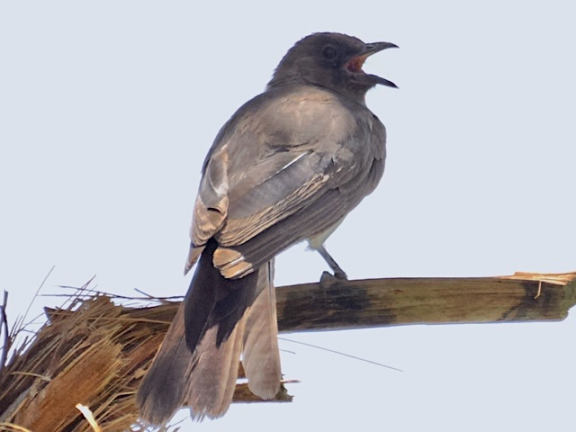

Common Bulbul
Pycnonotus barbatus
Order: Passeriformes
Family: Pycnonotidae

The bulbul of Africa. Brown body with a pale belly and yellow vent. Small crest. The name bulbul derives from the Persian word for nightingale.
Order: Passeriformes
Family: Pycnonotidae

The bulbul of Africa. Brown body with a pale belly and yellow vent. Small crest. The name bulbul derives from the Persian word for nightingale.
Makes sounds similar to other bulbuls, in some combination of bul and bit.